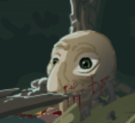

SPECIMEN 01THE UNEXPLAINED
The Gigglegoon
A creature of uncertain purpose. Perhaps a monster. Perhaps nothing at all.
AN UNCHARTED WORLD
Far away in a world of rulers and servants, dragons and aliens, lies the Gigglegoon. Not much of a monster, not much of anything really. Yet this is a world where some things matter, and others do not.
THE WATERS REMEMBER
FIELD NOTES / 001
Not everything here is what it seems.

SPECIMEN 01THE UNEXPLAINED
A creature of uncertain purpose. Perhaps a monster. Perhaps nothing at all.
NATIVE VEGETATION
Rooted in the same soil for longer than anyone can remember.
RESTRICTED ARCHIVE
Look closer. The environment has more to tell you.
Select a record to reveal its contents.